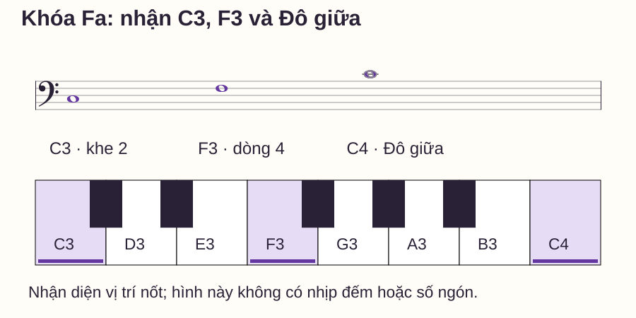
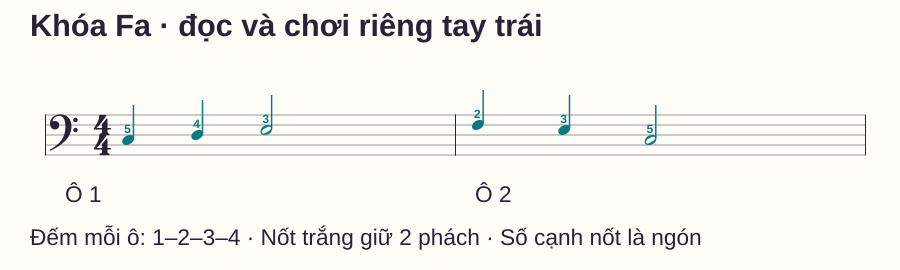
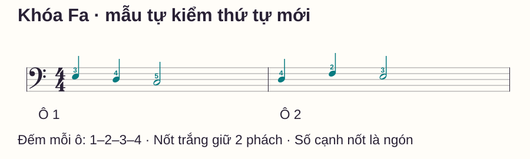

Đọc nhạc
Cách đọc khóa Fa trên piano: nốt mốc và bài tập tay trái
# Cách đọc khóa Fa trên piano: nốt mốc và bài tập tay trái
Bạn biết nốt trên khóa Sol nhưng khi nhìn khuông dưới lại phải đổi mọi thứ trong đầu. Nếu vừa suy ra tên nốt vừa tìm ngón trái, một câu rất ngắn cũng có thể trở nên rối.
Ta sẽ đọc khóa Fa trực tiếp bằng C3, F3 và C4, rồi thử hai ô nhịp riêng tay trái. Không cần chuyển từ khóa Sol trước mỗi nốt. Bài có hình khuông–bàn phím, sheet, bảng ngón và một mẫu mới để tự kiểm ngay trên đàn.
Trả lời nhanh
Khóa Fa xác định F3 ở dòng thứ tư tính từ dưới lên, nằm giữa hai chấm của ký hiệu khóa. Học thêm C3 ở khe thứ hai và C4 trên dòng kẻ phụ đầu tiên phía trên khuông. Từ một mốc chắc, đi qua từng dòng hoặc khe liền nhau để tìm tên nốt và quãng tám, rồi nối với phím đàn. Đọc vị trí trước khi thêm số ngón; ngón cái trái là số 1 nhưng không có nghĩa mọi Đô đều dùng ngón 1. Tập một mẫu riêng tay trái với trường độ rõ, sau đó thử thứ tự mới. Chỉ ghép tay khi bạn biết phần trầm sẽ đánh, giữ và nhả lúc nào.
Khóa Fa không phải khóa Sol được dịch xuống
Hai khóa gán cao độ khác nhau cho cùng vị trí hình học. Chẳng hạn, dòng thấp nhất của khuông Fa là G2, còn dòng thấp nhất của khuông Sol là E4. Nếu thấy nốt rồi đọc theo khóa Sol trước, bạn đang thêm một bước dễ nhầm.
Hãy lấy F3 làm mốc trực tiếp: đó là dòng được hai chấm của khóa Fa kẹp ở giữa. Vị trí F nằm dưới Đô giữa được giải thích trong OpenLearn — Clefs. Đây là dấu chỉ cao độ, không phải chỉ dẫn cố định ngón hoặc tay.
Trong bài, C = Đô, D = Rê, E = Mi, F = Fa, G = Sol, A = La, B = Si; C4 là Đô giữa, C3 là Đô thấp hơn một quãng tám. Các mẫu chỉ dùng phím trắng, không có dấu hóa. Khi đọc bản khác, vẫn phải xem hóa biểu và dấu hóa trước nốt.
Ba mốc trên khuông và dưới tay

| Mốc | Vị trí khóa Fa | Cách tìm trên đàn |
|---|---|---|
| C3 | Khe 2 | Đô thấp hơn Đô giữa một quãng tám |
| F3 | Dòng 4, giữa hai chấm khóa | Fa phía trên C3 |
| C4 | Dòng phụ đầu tiên phía trên | Đô giữa, cùng phím C4 ở khóa Sol |
Nhận diện mốc C4 bằng cách đặt lại bàn tay khi cần; đừng cố giữ tay trái giãn từ C3 đến C4. Mẫu thực hành hôm nay chỉ cần C3–F3 trong vùng năm ngón C3–G3.
Để kiểm mình thật sự nhận vị trí, đổi thứ tự gọi: F3, C4, C3, rồi C4, C3, F3. Hãy tìm nốt trên hình trước khi tìm phím. Nếu chỉ chỉ được khi đọc đúng thứ tự trái sang phải, có thể bạn mới nhớ vị trí trên trang của ba nhãn.
Đọc lên và xuống từ F3 hoặc C3
Quanh F3, lên một vị trí là G3 ở khe 4; xuống một vị trí là E3 ở khe 3. Xuống tiếp tới D3 là dòng 3, rồi C3 ở khe 2. Mỗi lần đổi giữa dòng và khe liền kề là sang tên nốt kế trong dãy.
Quanh C3, đi lên là D3–E3–F3; đi xuống là B2–A2–G2. Bạn không cần học thuộc cả hai chuỗi để thử bài; chọn một mốc và kiểm từng nốt xuất hiện.
Khi sai, nói rõ “tôi tưởng đây là dòng nhưng thực ra là khe” sẽ giúp sửa nhanh hơn lời tự trách tay trái chậm. Lỗi đọc vị trí và lỗi điều khiển ngón là hai nhiệm vụ cần kiểm riêng.
Đô giữa viết ở hai khóa có phải hai nốt khác nhau?

Một khoảng trống lớn giữa hai khuông không tạo thêm các phím mới. Nốt có dòng phụ cần được đọc theo khuông mà nó thuộc về. Nhận C4 ở cả hai khóa giúp bạn nối hai vùng khi đọc piano, thay vì coi khuông trên và dưới là hai hệ tên hoàn toàn tách rời.
Nếu muốn đối chiếu thêm, xem bài khóa Sol; hình và bảng trong bài này đã đủ để bắt đầu mà không cần mở bài kia.
Bài tập hai ô nhịp tay trái

| Ô | Phách 1 | Phách 2 | Phách 3–4 |
|---|---|---|---|
| 1 | C3 · ngón 5 | D3 · ngón 4 | E3 · ngón 3, giữ hai phách |
| 2 | F3 · ngón 2 | E3 · ngón 3 | C3 · ngón 5, giữ hai phách |
Cả hai tay đều gọi ngón cái là 1, trỏ 2, giữa 3, áp út 4, út 5. Đặt trái trong vùng C3–G3: ngón út ở C3, ngón cái hướng về G3. Khi âm đi lên C3–D3–E3–F3, số ngón giảm 5–4–3–2; không ép số ngón tăng theo hướng đọc.
Bước 1 — Gọi nốt, chưa chọn ngón
Đọc sáu đầu nốt theo mốc gần nhất. Với E3, bạn có thể đi xuống một vị trí từ F3 hoặc đi lên hai vị trí từ C3. Kiểm kết quả bằng bảng, sau đó thử lại không nhìn bảng chữ.
Bước 2 — Đặt phím và ngón riêng
Tìm C3 rồi đặt ngón 5; thử lần chuyển C3 sang D3 và D3 sang E3. Chưa cần nối hai ô nếu vẫn nhầm trỏ với út. Thả các ngón không chơi tự nhiên, không ghì tất cả phím để cố định tay.
Bước 3 — Gõ và đếm trước khi đàn
Đếm 1–2–3–4, gõ ở 1, 2 và 3; đếm tiếp 4 mà không gõ thêm. Làm hai lượt. Khi chơi, nốt ở 3 phải giữ qua 4, rồi đổi ở số 1 kế; gõ trên bàn không biểu thị được độ ngân, nên bảng trường độ vẫn cần được đọc.
Bước 4 — Chơi hai ô, kiểm đúng loại lỗi
Đếm một ô chuẩn bị, chơi mẫu hai lần, nhả C3 cuối ở số 1 ô 3. Có thể thử máy đếm nhịp khoảng 50 phách/phút, một click mỗi phách. Nếu nhịp đến mà bạn vẫn đoán ngón, tắt máy để làm rõ một lần chuyển rồi chọn lại tốc độ hoặc giảm còn một ô.
Chưa thêm tay phải ở lượt này. Mục tiêu là hiểu vị trí và thời gian của phần trầm, không chứng minh đã ghép tay ngay.
Bảng chẩn đoán: đang đọc sai hay bấm sai?
| Phép thử | Kết quả | Việc nên sửa |
|---|---|---|
| Gọi tên nốt khi chưa đặt tay | Tên đã sai | Nhìn lại khóa, mốc, dòng/khe |
| Gọi đúng C3 nhưng chơi C4 | Đúng tên, sai vùng | Nối nốt với quãng tám trên đàn |
| Chỉ đúng phím nhưng dùng nhầm ngón | Đúng cao độ, sai chuyển động | Đọc chỉ dẫn tay + ngón, tập riêng lần chuyển |
| Đúng phím nhưng nhả nốt trắng sớm | Sai thời gian | Gõ điểm vào, rồi giữ đủ phách trên đàn |
Hãy chọn một dòng sau mỗi lượt. Nếu liên tục đổi ngón để sửa một lỗi thực ra do đọc sai khóa, bạn đang thay nhầm yếu tố.
Mẫu tự kiểm thứ tự mới

Đọc một lượt chưa đàn; sau đó đặt vị trí C3–G3 và thử chậm. Mở đáp án sau khi bạn đã gọi tên để tránh biến bài tự kiểm thành một lượt đọc chữ.
Mở đáp án và trường độ
Ô 1: E3–D3–C3, ngón 3–4–5. Ô 2: D3–F3–E3, ngón 4–2–3. Mỗi ô có trường độ 1 + 1 + 2 phách. Nhả E3 cuối ở số 1 của ô tiếp.
Lịch tập mười phút
- Phút 0–2: ba mốc theo thứ tự thay đổi và vị trí bàn phím.
- Phút 2–4: gọi sáu nốt mẫu luyện, tách tên nốt khỏi số ngón.
- Phút 4–6: gõ rồi chơi hai lượt mẫu.
- Phút 6–8: đọc mẫu tự kiểm và chọn một dòng chẩn đoán lỗi.
- Phút 8–10: sửa một nhiệm vụ, thử lại một ô và ghi chỗ còn chưa chắc.
Lỗi thường gặp
Đọc mọi nốt như khóa Sol rồi “dịch” lại. Cách này dễ khiến bạn quay về đáp án sai khi vội. Dừng ở ký hiệu Fa, chỉ dòng F3 rồi đọc từ đó.
Đúng chữ C nhưng không có vùng đàn. C3 và C4 là hai phím khác nhau. Ở lượt tìm phím, gọi cả số quãng tám cho tới khi vị trí rõ.
Gắn ngón út với mọi nốt trầm. Ngón phụ thuộc câu và vị trí tay. Trong mẫu đang học C3 dùng 5; ở một mẫu khác C3 có thể dùng 1. Đọc lại chỉ dẫn thay vì áp quy tắc cố định.
Tăng âm lượng hoặc lực vì gọi tay trái là yếu. Nếu lỗi xuất hiện trước khi chơi, lực không giải quyết được. Dùng bảng chẩn đoán và nghỉ khi tay không thoải mái.
Khi nào học tiếp?
Bạn sẵn sàng thêm một nhiệm vụ khi nhận đúng C3/F3/C4 ở thứ tự thay đổi, đọc được mẫu tự kiểm khác thứ tự và chơi hai ô đúng cao độ, trường độ ở tốc độ vừa sức. Chưa cần chơi nhanh bằng tay phải hoặc thuộc mọi nốt ngoài khuông.
Bước tiếp là đọc hai khuông trên cùng thời gian. Nếu ngón trái còn nhầm, ôn số ngón piano; nếu ký hiệu thời gian còn khó, xem cách đếm nhịp. Phần đọc nốt piano tổng quan giúp nối các kỹ năng sau khi từng việc đã rõ.
Câu hỏi thường gặp
Năm dòng khóa Fa từ dưới lên là gì?
G2–B2–D3–F3–A3. Bốn khe giữa chúng là A2–C3–E3–G3. Bạn có thể dùng bảng để kiểm lại nhưng không cần đọc hết dãy trước mỗi nốt.
Khóa Fa có luôn do tay trái chơi không?
Không. Bài này dùng tay trái để tập phần trầm nhập môn. Khóa xác định cao độ, còn cách chia tay phụ thuộc bản nhạc.
F3 nằm ở dòng nào?
Dòng 4 từ dưới, cũng là dòng 2 từ trên. Hai chấm của ký hiệu Fa nằm hai bên dòng ấy.
C4 ở khóa Fa có cao hơn C4 ở khóa Sol không?
Không. Đó là cùng cao độ và cùng phím Đô giữa, được ghi ở hai vị trí theo hai khóa khác nhau.
Có nên tập khóa Fa lâu hơn vì tay trái chậm?
Trước hết kiểm đang chậm ở nhận nốt hay chuyển ngón. Tăng thời gian không thay thế việc chọn đúng nhiệm vụ; có thể chỉ cần một lần chuyển ngắn.
Mẫu nốt mới đúng nhưng nhịp chưa đều thì sao?
Tách gõ thời gian rồi chơi một ô chậm. Đừng vừa thêm tay phải vừa tăng tốc khi bạn chưa giữ đủ hai phách của nốt trắng.
Nguồn và ghi chú biên soạn
Đối chiếu ký hiệu với The Open University — Clefs và musictheory.net — Staff, Clefs and Ledger Lines. Tham khảo cách tách nhận nốt và ngón từ Piano Adventures. Hình, mẫu nhạc và bảng tự kiểm là nội dung gốc, chưa được thử nghiệm độc lập với học viên; không sao chép bài tập hoặc hình của nguồn.